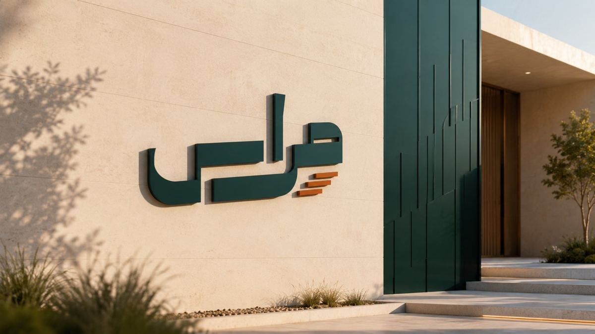
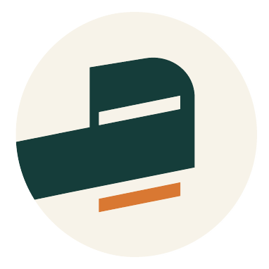

الرؤية
أن يكون مِراس منصة رائدة في بناء الشباب السوري القوي، المغامر، الواثق والمنضبط؛ الخادم لمجتمعه والمستعد لتحمّل المسؤولية.
برنامج لبناء القوة والقيادة الشبابية
عِش المغامرة: خيّم، وتحدَّ قدراتك، واصنع صداقات، وتعلّم أن تبادر وتقود — في بيئة آمنة تجمع التدريب والمغامرة والانضباط والعمل الجماعي والخدمة.
عن مِراس
يعمل مِراس على تحويل طاقة الشباب إلى قوة نافعة، وحماسهم إلى مبادرة، ومهاراتهم إلى مسؤولية؛ لإعداد جيل واثق منضبط منتمٍ إلى وطنه، وقادر على التأثير الإيجابي في مجتمعه.
أن يكون مِراس منصة رائدة في بناء الشباب السوري القوي، المغامر، الواثق والمنضبط؛ الخادم لمجتمعه والمستعد لتحمّل المسؤولية.
مغامرة وارتقاء؛ بناءٌ للشخصية الشبابية المؤهلة لتحمّل المسؤوليات الوطنية.
مِراس برنامج شبابي مستقل يحظى برعاية مؤسسات حكومية، على رأسها مديرية الأنشطة.


الصورة المستهدفة
شاب معتز بهويته، مستقيم السلوك، واعٍ بذاته، منضبط ومسؤول، قادر على بناء العلاقات والعمل مع الآخرين، مبادر في خدمة مجتمعه، يقود ضمن القيم والصلاحيات، ويتعلم من التجربة ويصنع أثرًا مستدامًا.
الرحلة
مرحلة تأسيسية وثماني مراحل متدرجة، مدة كل منها تسعة أشهر. والانتقال قرار جاهزية مبني على أدلة، لا انتقال زمني تلقائي.
«أعرف من أنا، وأبدأ من نفسي، وأكون نافعًا»
المحور: الهوية والانتماء وبناء العادات
«أقود نفسي قبل أن أطلب قيادة غيري»
المحور: قيادة الذات والثبات
«كلمة طيبة، شورى صادقة، وفريق يصنع الخير»
المحور: التواصل والعمل الجماعي
«أصلح نفسك، وانفع غيرك، واترك أثرًا»
المحور: صناعة الأثر والرسالة
كيف نعمل
يبني المعنى والمهارة ويحافظ على الإيقاع والمتابعة. مدته 90–150 دقيقة: تهيئة، معنى، نشاط، تأمل، تطبيق، تكليف متابعة.
تنقل التعلم إلى خدمة ومسؤولية واقعية. من يوم إلى أربعة أسابيع، وللشباب فيها مساحة قرار وتنفيذ حقيقية.
تجربة مكثفة تدمج المجالات وتختبر الكفاءات في موقف مركب، بتحدٍّ متدرج وتأمل وتقييم ومتابعة بعد العودة.
لأولياء الأمور
السلامة وإدارة المخاطر جزء من تصميم كل برنامج ومخيم، لا إضافة عليه. نوضح لكم كل شيء قبل المشاركة.
مسعف مؤهل، ومخاطر مقيّمة، وخطة طوارئ وإخلاء مجرَّبة قبل كل مخيم. أي نقص حرج يؤجّل التنفيذ.
عند الاستيقاظ والنوم، وقبل كل نقل أو نشاط وبعده. لا تتحرك المجموعة قبل تفسير أي نقص.
لكل مشارك أو عضو فريق طلب إيقاف خطر وشيك، ولا يُعاقب من أبلغ بحسن نية.
بيئة آمنة خالية من الإساءة والاستغلال، ولا تُنشر صور أو بيانات دون موافقة، بما فيها موافقة ولي الأمر.
البرامج الرديفة
برامج للطلاب والشباب والكوادر التربوية، تُقدَّم عبر المخيمات والدورات والفعاليات والبرامج الممتدة، وتعمل خارج مسار التدرّج الأساسي.
تدريب مشرفي الطلاب على قيادة المجموعات، ومخيمات للمرحلتين الابتدائية والثانوية.
تهيئة للعودة إلى التعليم، وتأهيل مهاري، وإرشاد وتواصل مع الأسرة، ومخيمات دورية.
تهيئة جامعية، ومهارات، واهتمامات وتخصصات، ومبادرات، وتهيئة لسوق العمل، ومتابعة.
غرس القيم، والعادات الإيجابية، والسلوك والتواصل، والتاريخ، والثقافة، وتصحيح المفاهيم.
شركاؤنا في البناء
تجربة ميدانية تكمّل دوركم في بناء الشباب؛ لنتعاون في الترشيح والأنشطة.
برنامج مستقل برعاية حكومية يدعو لتعاون محدد الأدوار في المواقع والتسهيلات.
شراكة تمنح الشباب دورًا عمليًا في مبادرات خدمة مشتركة.
انضم إلينا
من الإعلان إلى تثبيت العضوية، بخطوات واضحة وقرار تتخذه لجنة قبول، لا شخص واحد.

خيّم، وتحدَّ قدراتك، واصنع صداقات، وتعلّم أن تبادر وتقود.